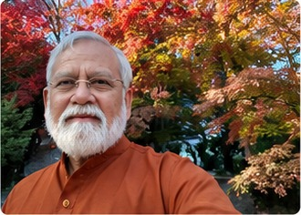
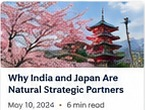
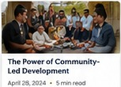
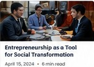
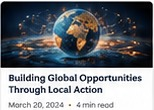

India–Japan
Mission 2030
Connecting Japanese excellence with Indian innovation and opportunity.
Trusted by & collaborating with

Meet
A visionary entrepreneur and founder dedicated to transforming communities through entrepreneurship, international collaboration, and purposeful leadership.
His work has brought together governments, businesses, innovators, investors, and changemakers to build sustainable economic ecosystems that create opportunities for future generations.
From promoting India–Japan partnerships to enabling startups and empowering local communities, his mission remains focused on creating a more connected and prosperous world.
Read full biographyMy mission
Through innovation, collaboration, and shared purpose, Dr. Ashok Kumar works to build ecosystems that empower entrepreneurs, strengthen communities, and foster international partnerships.
Connecting Japanese excellence with Indian innovation and opportunity.
Building sustainable community development through entrepreneurship and collaboration.
Helping founders access mentorship, partnerships, funding, and growth opportunities.
Encouraging businesses to create value for society while achieving economic success.
Stronger together
The future belongs to nations and businesses that collaborate across borders.
Dr. Ashok Kumar has championed initiatives that connect Indian entrepreneurs, manufacturers, innovators, and communities with Japanese expertise, investment, technology, and culture.
Explore Mission 2030 →The vision
Watch Dr. Ashok Kumar share his journey, mission, and vision for creating lasting global impact.
Insights for a better future




“Dr. Ashok Kumar possesses a rare ability to connect people, ideas, and opportunities in ways that create meaningful impact.
— International Business Leader
“His vision for India–Japan collaboration opens new possibilities for entrepreneurs and communities alike.
— Japanese Industry Representative
“He inspires action by combining purpose with practical execution.
— Startup Founder
A journey of purpose
Whether you are an entrepreneur, investor, policymaker, educator, business leader, or changemaker, there is an opportunity to collaborate.